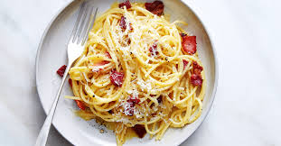

Spaghetti Carbonara
Home
Recipes
About
Contact

Spaghetti Carbonara
Serves: 2
Type: Main
Vegetarian: No
Vegan: No
Ingredients
/ 200g pancetta or guanciale, diced
2 large eggs
1 cup grated Parmesan cheese
2 cloves garlic, minced
Salt and black pepper to taste
2 tablespoons olive oil
Fresh parsley, chopped (optional)
Instructions
- Bring a large pot of salted water to a boil. Cook the spaghetti according to the package instructions.
- In a large skillet, heat the olive oil over medium heat. Add the pancetta and cook until crisp, about 5-7 minutes.
- Add the garlic to the skillet and cook for another minute.
- In a bowl, whisk together the eggs and Parmesan cheese.
- Drain the spaghetti and add it to the skillet with the pancetta. Remove the skillet from heat.
- Quickly pour the egg and cheese mixture over the hot pasta, tossing to coat. The heat from the pasta will cook the eggs.
- Season with salt and black pepper to taste. Garnish with chopped parsley, if desired.
- Serve immediately.